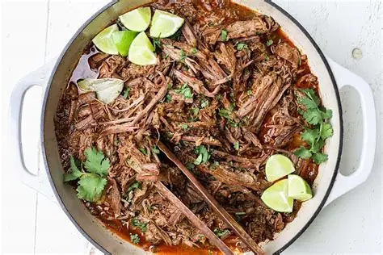
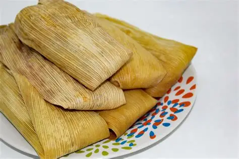
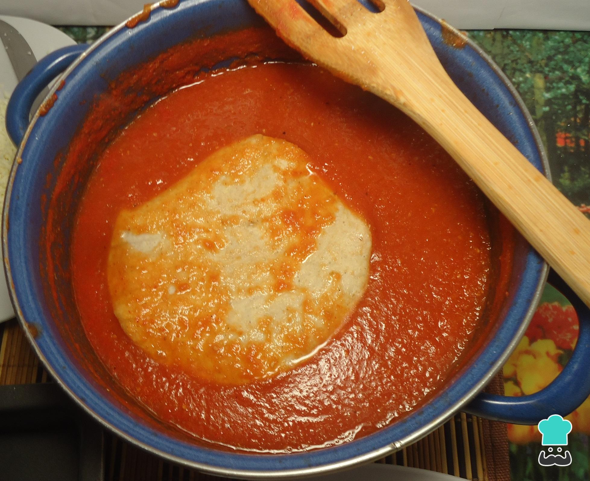
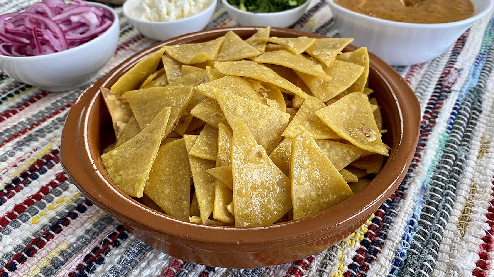

Comidas Tradicionales
Explora algunas comidas tradicionales y su nombre en mixteco de San Agustín Tlacotepec.

Pozole
Mixteco:Duxa

Caldo de pollo
Mixteco:Deminu chu’un

caldo para el espanto
Mixteco:Deju ko’on chu’u

Barbacoa
Mixteco:Ñu’u jitnu

Frijol con trigo
Mixteco: Dejunun triu

Mole de albergón
Mixteco: Dejununha duchi tsindu

Frijol con maíz
Mixteco: Dejunun do’yo

Tamal
Mixteco: Staña’ama

Empanada de hongo
Mixteco: Staji’i
Sope
Mixteco: Staxi’i

Remojada
Mixteco: Teja’a ñundaji

Tortilla con salsa
Mixteco: Staa teya´a

Tortilla de salsa con huevo
Mixteco: Státe'yá jǐ'in chi'bi nduvua

Salsa de nopal
Mixteco: Teja’abi nde

Salsa de semillas de calabaza
Mixteco: Teja’a chikun
Tortilla
Mixteco: Stá

Totopos
Mixteco: Lu’u

Frijol molido
Mixteco: Dejunun daxi

Salsa de tomate de cáscara
Mixteco: Te'yá nu kòo'yá